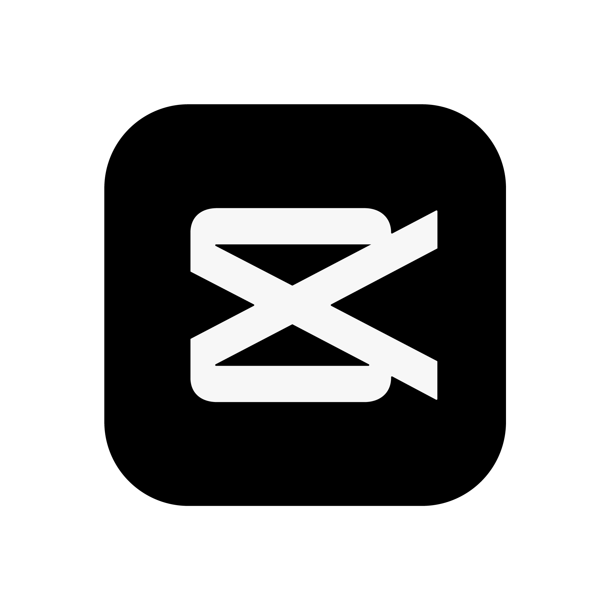
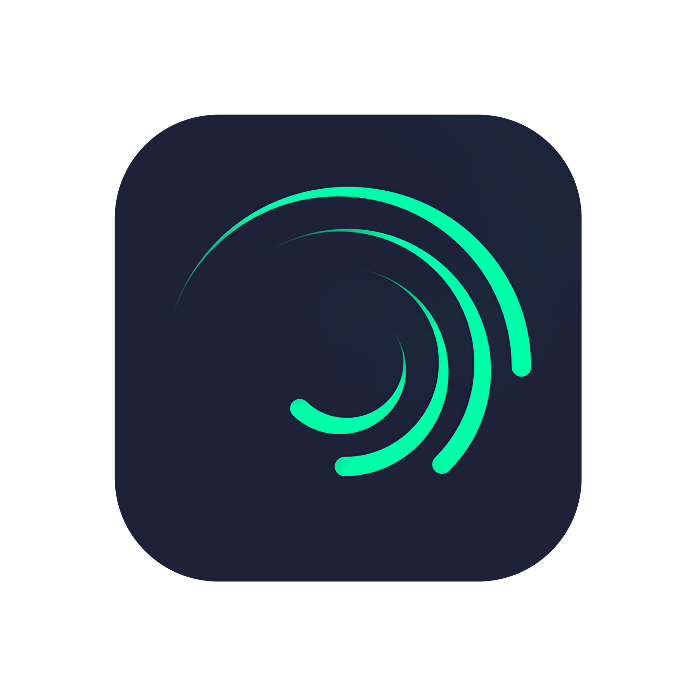
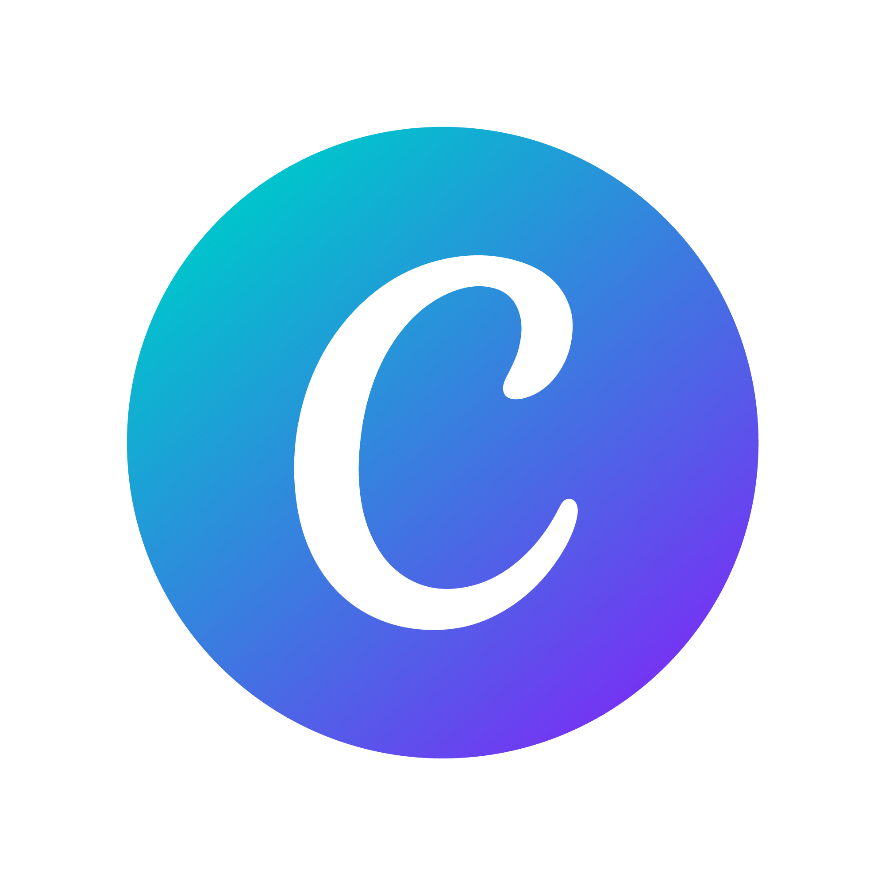
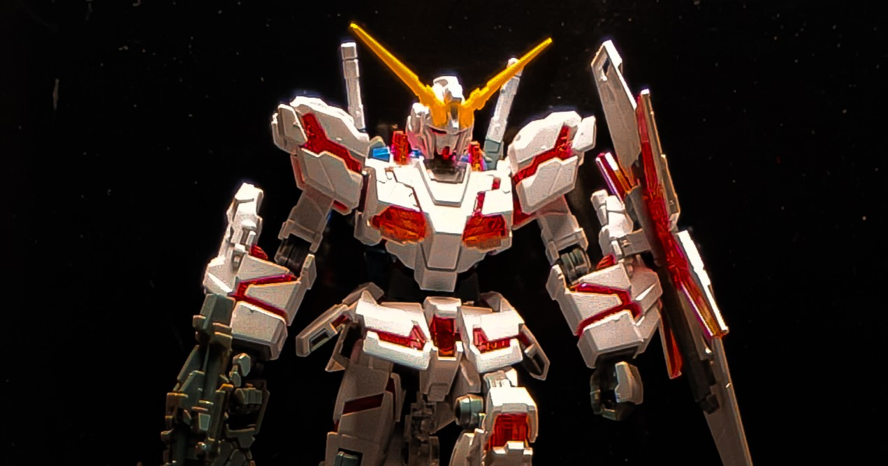

Hi, Saya Theofilus Bilung, S.Kom
Lulusan Sistem Informasi berpembawaan adaptif dengan keahlian ganda di bidang Teknologi Informasi / Administrasi Digital dan Kreatif Media / Content Creation. Berdomisili di Sangatta, Kalimantan Timur.
Biodata & Profil Diri
Informasi Pribadi
Minat & Orientasi Karir
Berbekal latar belakang akademik **Sistem Informasi** dan kreativitas di dunia **Media & Konten**, saya sangat berminat untuk berkontribusi di bidang:
Keahlian & Perangkat Lunak
Kombinasi kemampuan teknikal IT dan kreasif media visual
Technical & Information Systems
Pengelolaan data, web dasar, dan sistem informasi
Creative Media & Software
Penyuntingan video, desain grafis, dan fotografi




Karya & Proyek
Beberapa contoh hasil karya Sistem Informasi dan Kreatif Media
 IT Project
IT Project
Sistem Informasi Administrasi
Perancangan & pengembangan konsep database sistem inventarisasi berkas digital secara efisien.
 DESAIN GRAFIS
DESAIN GRAFIS
Color Grading & Visual Graphic
Penyuntingan warna foto lanskap & portrait menggunakan Adobe Lightroom beserta template Canva.

PHOTOGRAPHYColor Grading & Visual Graphic
Penyuntingan warna foto lanskap & portrait menggunakan Adobe Lightroom beserta template Canva.
Mari Bekerja Sama!
Apakah Anda membutuhkan tenaga kerja di bidang **IT Admin, Logistik**, atau **Content Creator / Video Editor**? Saya siap berkontribusi.